Infinity Grove · Revisão de UI
Ramos da árvore de talentos e cartão do talento
As cadeias agora saem do tronco pela veia colorida de cada galho e sobem até a ponta, os nós ficaram menores, Fúria crescente vem depois da cadeia do combo e o cartão explica o talento com um ícone grande no anel do ramo. Não encontrei sobreposição nem texto cortado; só sugestões de gosto.
12
telas e estados verificados
12
capturas (desktop)
0
achados de severidade alta
0
achados médios e baixos
Fidelidade à spec
- ✓Cada ramo sai do tronco pela sua veia e sobe pelo galho, grau 1 perto do tronco e grau 3 na ponta (compara com layout-target.png)
P1 Ramos AC 1-3 - ✓Nenhum nó, legenda, banner ou parte fixa se sobrepõe (métricas do Playwright: 0 sobreposições, 0 banners sobre nós ou título)
P1 Ramos AC 4, 6 - ✓Nós de 44 px (Fúria 56 px) com selos, cadeados e emblemas legíveis
P1 Tamanhos AC 1-3 - ✓Veias acesas seguem os galhos; fallback com 11 veias tracejadas
P1 Ramos AC 7, 8 - ✓Cartão de 460×136 com descrição em português, nível e efeito na mesma linha, texto sem cortes
P1 Cartão AC 1, 5, 7 - ✓Ícone de 88 px em anel da cor do ramo (ciano, vermelho, dourado, roxo) com brilho; glifo quando falta a arte
P1 Cartão AC 3, 4 - ✓Cartão vazio mostra só o texto de escolha
P1 Cartão AC 6 - ✓Fúria crescente depois de Limite de dano do combo, em galho próprio, ligada a ele
P2 Fúria AC 1, 2 - ✓Todo o texto novo está em português
AD-007
Capturas
Árvore (arte real)
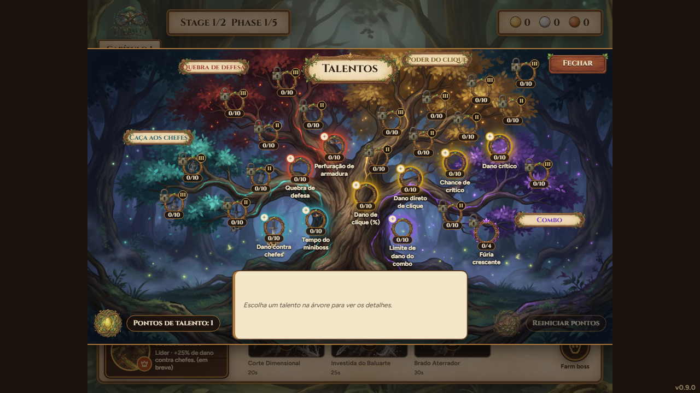
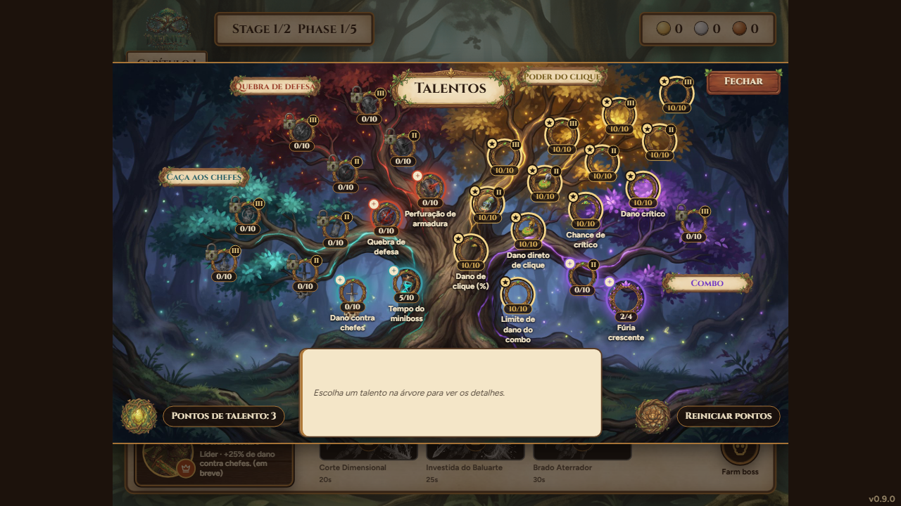
Árvore (arte ausente)
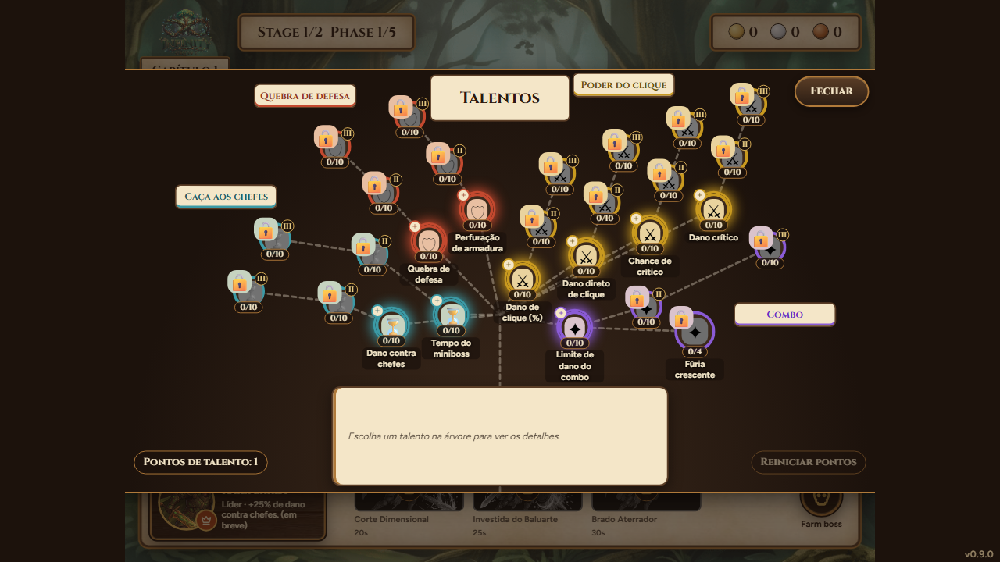
Cartão do talento
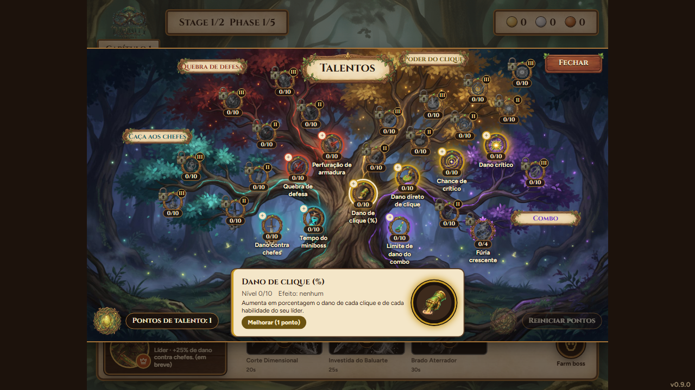
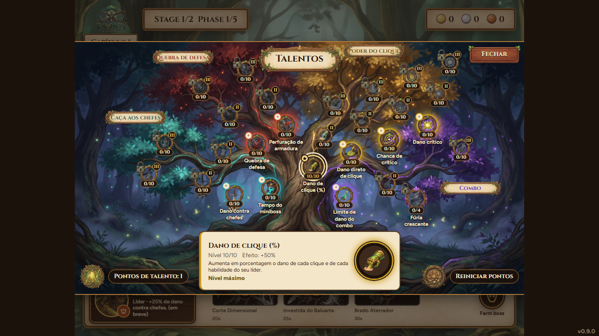
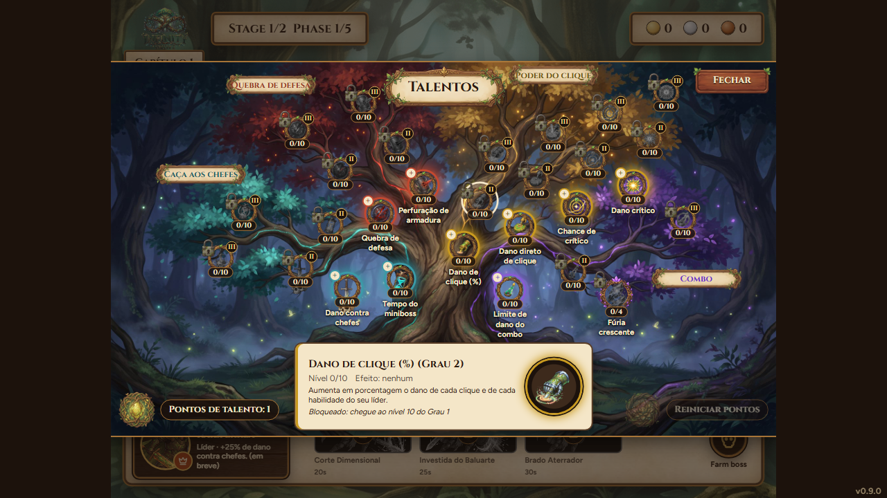
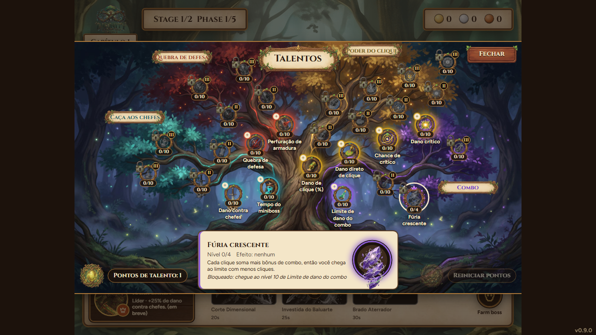
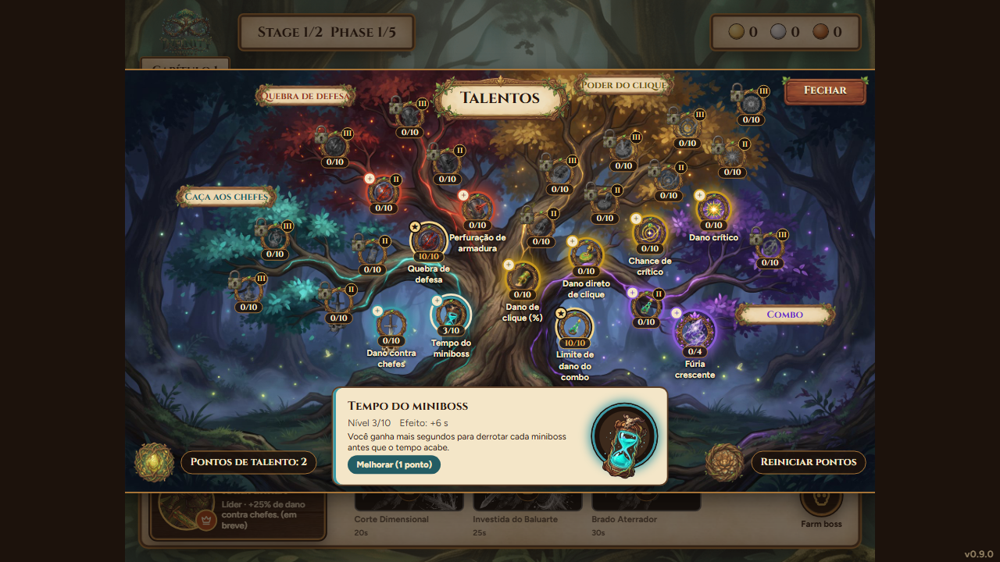
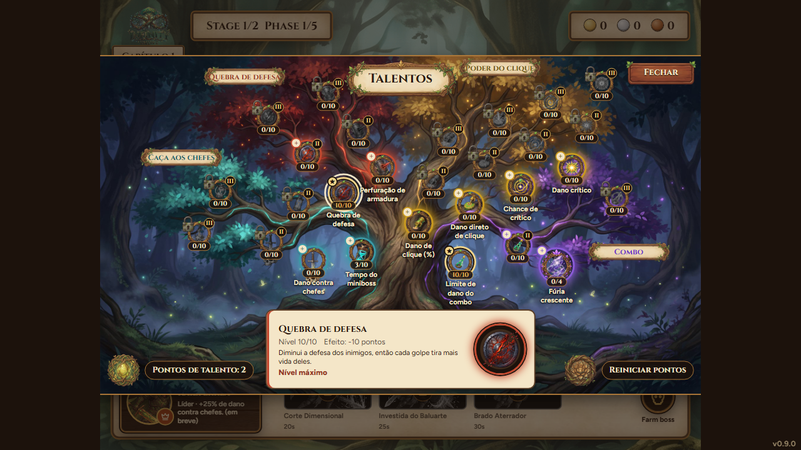
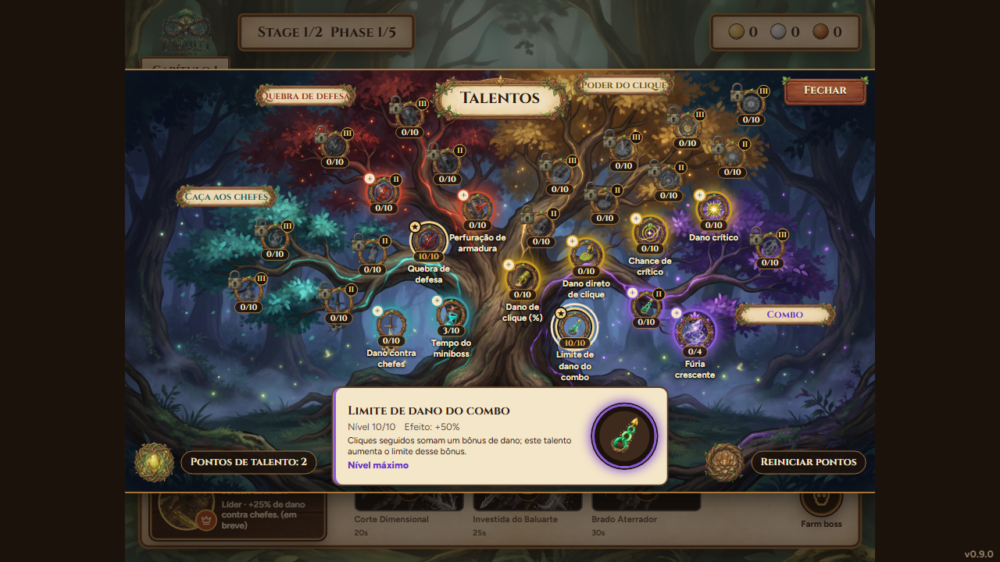
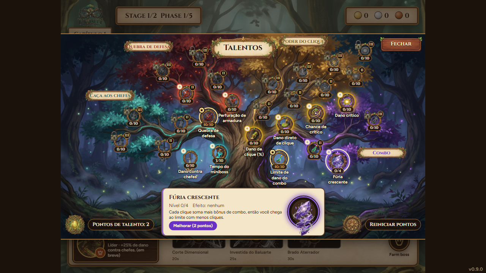
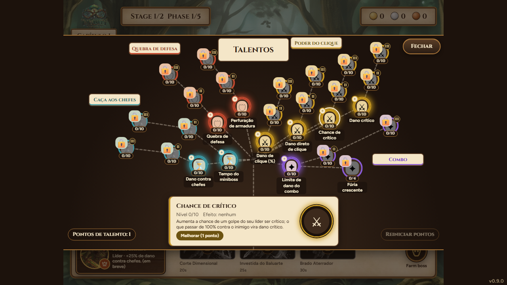
Achados
Nenhum achado.
Sugestões
- ✦Os ícones dos nós bloqueados com arte real ficam bem escuros (cinza sobre anel escuro) e quase não se distinguem; um leve aumento de brilho ajudaria a ler qual talento é. Não é defeito: o estado bloqueado já está marcado pelo cadeado.
- ✦Descrição do cartão em 12 px é pequena na tela de 1280×720; 13 px caberia nas 2 linhas do cartão de 460 px.
- ✦No fallback sem arte, as veias convergem sobre a legenda de Dano de clique (%) e a cruzam; só aparece sem a arte, então é cosmético.
- ✦O cartão mostra Efeito: nenhum no nível 0; Sem efeito ainda seria mais natural em português. Texto herdado da feature anterior.
Console e recursos
Nenhum erro nem recurso faltando.